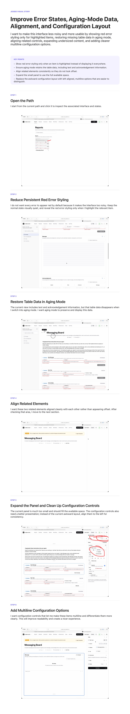

“The image is wrong after I click save...”
Open source by Polyform
AI is bad at video.
Give it the parts that matter.
Record a screen walkthrough the natural way. Narrate it, mark what matters, and let JesSee turn the useful moments into an editable visual story—without sending a giant video or explaining the same thing twice.
Native Mac app · Polyform Covered or your own key · Your recordings stay local
▶18:42
JesSee
Update the product image
A clear outcome, the exact steps, and the visual evidence that proves each one.
01
Open image settings
✓
02
Choose the replacement
✓
03
Confirm the new state
✓
See the native app
From walkthrough
to useful context.
The current JesSee Mac app keeps the fast part—showing and explaining—then helps you choose the evidence, mark what matters, shape the story, and export the useful version.
22 seconds · Sound on for interface cuesThe actual product
One walkthrough.
A story you can shape.
JesSee does more than transcribe. It connects narration to screen evidence, uses your marks as a signal, keeps the source page, and gives you a real editor before anything becomes a PDF.
Annotate while recording
Choose alternate screenshots
Edit text and source links
Return from the local Library
01 The communication gap
Video is natural to make.
It is painful to send and use.
A walkthrough may be the fastest way to explain five connected ideas, but it becomes a large file, an unstructured timeline, and another thing someone—or an AI—has to scrub. Design tools see frames. Transcription tools hear words. The meaning lives in how your narration, actions, and emphasis fit together.
Large files are hard to move
Screen recordings are slow to attach, awkward to send around, and expensive for an AI to process frame by frame.
One timeline hides many ideas
A bug, a desired behavior, and three product decisions can share one recording with no structure between them.
Pixels alone miss your intent
A design summary sees the screen but not why you paused, circled a control, or said that this state was wrong.
The idea
Your voice explains the idea. Your marks show what matters. JesSee keeps both—and removes the timeline an AI or teammate should not have to scrub.
02 From walkthrough to useful context
Record the video.
Give AI the useful version.
Your recording is raw material, not the final input. JesSee connects what you said to what was on screen, breaks it into clear steps, and lets you choose the screenshots that best communicate the story before creating the document.
STEP 01
Show and explain
Choose a window, app, or display from the Mac menu bar. Talk naturally while you work, watch the live microphone level, and draw or highlight what matters. Those marks become evidence signals, helping JesSee favor the right moments without losing the wider sequence.
- The timer stays visible without covering the work
- Hover any control to see what it does
- Press ⌥S anywhere to stop and process
STEP 02
Edit the draft, not a form
JesSee creates the first version inside one visual editor. Rewrite any sentence, turn ideas into lists or callouts, mark up the evidence, and click a large image to step through captured alternatives.
- Format text as paragraphs, bullets, numbered lists, and callouts
- Draw highlights or redact details before sharing
- Step backward or forward through image choices
STEP 03
Return to any walkthrough
Your explanation does not disappear after one download. The local library keeps each recording, transcript, visual story, and selected evidence together so you can revise or export it again later.
- Search every retained walkthrough
- Play the original recording or read its transcript
- Reopen the editable story and download a fresh PDF
STEP 04
Give AI context it can use
Generate one structured PDF with the sequence, explanation, source pages, and visual proof together. Attach it to an AI conversation, product spec, or bug report without uploading a long video or rebuilding the story by hand.
PDF Download example PDFOne continuous playbook made by the native JesSee app ↓
03 Download JesSee
Open source · Native for macOS
Install it once.
Update it in place.
The Mac app lives in your menu bar, records any app or browser you choose, imports existing videos, and keeps every finished story in a folder you control.
SIGNED MAC APP
macOS 15+JesSee for Mac
Open the installer, drag JesSee to Applications, and complete setup. JesSee then stays within reach at the top-right of your Mac.
- Download and open JesSee.dmg
- Drag JesSee into Applications
- Choose Polyform Covered or add your OpenAI key, then choose your library folder and microphone access
- Look for the JesSee viewfinder icon at the top-right of your menu bar—it stays there even when the Library is closed
Works across Safari, Chrome, and every other Mac appView the open-source project ↗
04 Built for AI, useful beyond it
Explain it once.
Use the story anywhere.
I built JesSee to give AI better product context. The same visual document also makes tutorials, playbooks, and offline guidance easier for people to use.
Specs for AI agents
I walk through the current product, explain the behavior I want, and give the resulting visual spec to an agent. It gets the flow and the evidence—not a folder of unlabeled images.
Debugging and bug reports
I reproduce the issue once, then give an AI or teammate the exact path, the unexpected state, and the screenshots needed to diagnose and fix it.
Tutorials and playbooks
A natural walkthrough becomes step-by-step guidance with the right images already connected to the right explanation.
Thoughtful offline handoffs
I can explain a complex idea at full length, then send a clean document someone can scan and reference instead of asking them to watch an 18-minute recording.
“
I built JesSee because video is often the easiest way to explain a product and one of the worst formats to give an AI. The output should not be more media to process. It should be the screenshots, sequence, and explanation the AI actually needs.
AE
Ahmed ElsamadisiFounder, Polyform
Why I built it
The recording is not the product.
Usable context is.
JesSee keeps the natural act of showing and explaining, then compresses the walkthrough into the moments that carry meaning. The result is durable context that can move cleanly between an AI agent, a teammate, a tutorial, and a product workflow.
Open source · MIT licensed
This is just the start.
Please make it better.
JesSee is an experiment in a better way to give visual product context to AI—and a useful way to turn walkthroughs into tutorials, playbooks, and guidance for people. Try it on real work, report what breaks, or help build what should come next.
How data moves: Recordings, screenshots, and PDFs remain stored in the folder you choose. Polyform Covered sends temporary audio and selected evidence through authenticated Polyform workflows; Bring Your Own Key sends narration and selected evidence directly to OpenAI using the key stored in your Mac's Keychain. Optional product events go directly to Google Analytics without your email or media. This website measures page visits, downloads, and GitHub-link activity, but never sends recordings, screenshots, narration, API keys, email addresses, or unapproved URL parameters.
polyform-ai / jesseePublic
Help AI see what you see.
▣ mac◇ Sources▤ docs◆ website